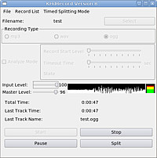

KHdRecord
Archivierte Anleitung
Dieser Artikel wurde archiviert, da er - oder Teile daraus - nur noch unter einer älteren Ubuntu-Version nutzbar ist. Diese Anleitung wird vom Wiki-Team weder auf Richtigkeit überprüft noch anderweitig gepflegt. Zusätzlich wurde der Artikel für weitere Änderungen gesperrt.
Zum Verständnis dieses Artikels sind folgende Seiten hilfreich:

KHdRecord ist ein leicht bedienbares Audioaufnahmeprogramm, das vom Audioeingang des Computers direkt in Ogg-Vorbis-, Mp3- oder Wav-Dateiformat aufnimmt. Durch die Möglichkeit der direkten Aufnahme in komprimierte Ogg-Vorbis- und Mp3-Dateien können auch bei geringem Speicherplatz mehrstündige Aufnahmen am Stück gemacht werden. Dabei können Bitrate, Aufnahmezeit, Aufnahmepegel und die Aufnahme in mehrere Dateien eingestellt werden. Damit hat KHdRecord mehr Funktionen als der Archiv/GNOME Soundrekorder. Mit KHdRecord können z.B. Radiomitschnitte digitalisiert werden. Ein zeitaufwendiges Exportieren in das gewünschte Dateiformat wie bei Audacity entfällt. Voraussetzung ist eine entsprechend gute Aufnahmesoundkarte. Mit KHdRecord aufgenommene Dateien können z.B. mit mp3splt leicht geschnitten werden.
Installation¶
Debianpaket¶
Dazu dieses deb-Paket (Version 0.8.0) herunterladen und über eine lokale Paketquelle oder mit GDebi installieren. Alle Abhängigkeiten werden dann automatisch installiert.
Achtung!
Fremdpakete können das System gefährden.
aus dem Quellcode kompilieren¶
Um KHdRecord aus dem Quellcode zu kompilieren, müssen vorher folgende Pakete installiert sein: [1]
libqt3-compat-headers (universe, [2])
libartsc0-dev
libogg-dev
libvorbis-dev
linux-libc-dev
moc
libstdc++5
oss-compat
Zum Erstellen von mp3-Dateien benötigt man noch:
libmp3lame (multiverse, [2])
Dann lädt man das KHdRecord.tar.gz-Archiv hier herunter: http://software.jodda.de/record.html  .
Das Archiv muss entpackt [3] werden. Nun wechselt man im Terminal [4] in den angelegten Oder und kompiliert das Programm. [5]
Wenn alles gut geht, entsteht im Ordner khdrecord die Datei KHdRecord. Diese kann am Besten mit Root-Rechten in den Ordner /opt/bin kopiert werden. Dabei müssen die Zugriffsrechte [6] beachtet werden und dass das Programm ausgeführt werden kann. Dann kann KHdRecord im Terminal [4] mit dem Befehl
.
Das Archiv muss entpackt [3] werden. Nun wechselt man im Terminal [4] in den angelegten Oder und kompiliert das Programm. [5]
Wenn alles gut geht, entsteht im Ordner khdrecord die Datei KHdRecord. Diese kann am Besten mit Root-Rechten in den Ordner /opt/bin kopiert werden. Dabei müssen die Zugriffsrechte [6] beachtet werden und dass das Programm ausgeführt werden kann. Dann kann KHdRecord im Terminal [4] mit dem Befehl
/opt/bin/KHdRecord
mögliche Fehlermeldungen¶
"Datei oder Verzeichnis nicht gefunden"¶
Wahrscheinlich aber wird der Kompilierversuch mit make zu Fehlermeldungen im Terminal führen wie z.B.:
main.c:11:26: error: qapplication.h: Datei oder Verzeichnis nicht gefunden
Hier z.B. muss die Datei qapplication.h vorher noch installiert werden. Man muss herausfinden, welches Paket der entsprechenden Ubuntu-Version diese Datei enthält. Das macht man auf http://packages.ubuntu.com/ unter "Search the contents of packages". Man installiert das entsprechend angezeigte Paket [1]. Wenn die Fehlermeldung angezeigt wird, obwohl das entsprechende Paket installiert ist, dann muss man den makefile im Ordner khdrecord ändern. Je nach Linux-Distribution oder Ubuntu-Version kann der makefile anders geändert werden müssen. Im makefile gibt es folgende Zeile:
-I $(QTDIR)/include -I/opt/kde3/include -I. -o $*.o $*.c
Dort ergänzt man den Dateipfad. Hat z.B. die Suche nach qapplication.h unter http://packages.ubuntu.com/ das Paket libqt3-headers mit dem Pfad /usr/include/qt3/qapplication.h ergeben, dann müsste die entsprechende Zeile im makefile im Ordner khdrecord folgendermaßen ergänzt werden:
-I $(QTDIR)/include -I/opt/kde3/include -I/usr/include/qt3 -I. -o $*.o $*.c
Dieses Spielchen macht man bis alle Dateien und Verzeichnisse gefunden werden.
"Kommando nicht gefunden"¶
Kommt beim Kompilieren folgende Meldung:
make: /usr/lib/qt3/bin/moc: Kommando nicht gefunden
dann muss im makefile der Inhalt der Zeile 14 durch Folgendes ersetzt werden:
MOC=/usr/bin/moc
Abhängigkeiten ab jaunty¶
Egal ob als Debianpaket installiert oder aus dem Quellcode kompiliert; ab Ubuntu jaunty sind nicht mehr alle Abhängigkeiten über die Paketquellen der jeweiligen Ubuntuversion installierbar. Speziell das Paket libartsc0-dev fehlt. Um dennoch alle Abhängigkeiten zu installieren kann in der Datei /etc/apt/sources.list folgende Zeile zugefügt werden:
deb http://de.archive.ubuntu.com/ubuntu intrepid main restricted
Danach müssen die Paketquellen neu geladen werden mit
sudo apt-get update
Die Paketverwaltung installiert ja, wenn in der sources.list mehrere Paketquellen angegeben werden, automatisch die neuste Paketversion, womit weiterhin alle Pakete der neusten Ubuntuversion installiert werden. Es sei denn, es gibt das bestimmte Paket wie bei libartsc0-dev nicht mehr in den Paketquellen der neuen Ubuntuversion. Dann wird das Paket wie in diesem Fall aus älteren Paketquellen verwendet.
- Erstellt mit Inyoka
-
 2004 – 2017 ubuntuusers.de • Einige Rechte vorbehalten
2004 – 2017 ubuntuusers.de • Einige Rechte vorbehalten
Lizenz • Kontakt • Datenschutz • Impressum • Serverstatus -
Serverhousing gespendet von